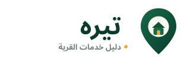

موقع تيره — ملخص التصميم
الهوية البصرية + شاشات الواجهة + الدياجرامز · للاعتماد قبل البدء في التنفيذ

الفكرة
دليل خدمات قرية تيره على الموبايل: الزائر يفعّل اللوكيشن فيشوف الأقرب ليه من مطاعم وكافيهات وعيادات وصيدليات ومدرسين وسناتر ومحلات موبايلات وعطارة وخدمات إلكترونية وغيرها، ويتواصل مع أي خدمة بضغطة (اتصال/واتساب/اتجاهات). الإضافة كلها من لوحة تحكم للأدمن بس.
الهوية
شعار: دبوس خريطة جوّاه بيت — «خدمات قريتك جنب بيتك». الخط: Cairo للواجهة وNoto Naskh للقصص الطويلة.
الشاشات المصممة (١٦)
- الرئيسية: بحث + ١٤ تصنيف + عروض + الأقرب ليك
- صفحة تصنيف (مطاعم وكافيهات) بفلاتر
- حواليك: خريطة بالدبابيس وقايمة الأقرب
- صفحة المكان: مواعيد، اتصال، واتساب، اتجاهات
- العروض والإعلانات المميزة
- المجتمع: أخبار ومفقودات ووظائف وفيسبوك
- عن تيره: التاريخ والإنجازات والإحصائيات
- صفحة الشهداء (محتوى من لوحة التحكم)
- لوحة تحكم الأدمن (ديسكتوب)
- المدرسين والسناتر: فلاتر النوع والمادة والمرحلة والمواعيد
- صفحة المدرس/السنتر: المواد، جدول المجموعات، الأسعار
- الخدمات الإلكترونية (فوري، محافظ، إنترنت، حكومية)
- محلات الموبايلات (بيع وصيانة واكسسوارات)
- العطارة (أعشاب وبهارات وزيوت)
- الإعلانات والسوشيال ميديا (إدارة صفحات وإعلانات)
- صفحة المحل: نموذج تفاصيل أي محل من التصنيفات الجديدة
الدياجرامز (٣)
- خريطة الصفحات: كل الصفحات والعلاقة بينها، ومنها فرع التعليم
- رحلة المستخدم: الزائر والأدمن خطوة بخطوة
- ERD: ١٣ جدول بالعلاقات، ومنها جداول المدرسين والسناتر (tutors والمواد والمواعيد) — جاهزة لموديلات لارافيل
ملفات الحزمة
الشعار SVG + PNG بجودة عالية · دليل الهوية PDF · ١٦ لقطة شاشات PNG · ٣ دياجرامز SVG/PNG · ملفات HTML/CSS المصدر (نفس التوكنز هتتستخدم في مشروع لارافيل).
الخطوة الجاية
بعد اعتماد الشكل: بناء مشروع Laravel + Livewire بالهيكل المتفق عليه (الأماكن، لوحة الأدمن، صفحة حواليك بالخريطة، العروض، المجتمع، صفحات القرية) — والتصميم ده هو المرجع البصري لكل صفحة.